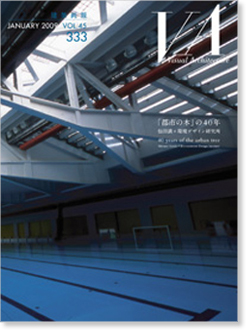

当サイトはJavaScriptをonにしてご覧ください。

FEBRUARY 2009 VOL.45 333
「都市の木」の40年
仙田満＋環境デザイン研究所
40 years of the urban tree
Mitsuru Senda + Environment Design Institute
定価 3,300円（税込）
ISBN 978-4-901772-44-0
環境デザイン研究所40年を迎えて
仙田満
環境デザイン研究所 2001 ～2008 教育・文化・スポーツへの展開
斎藤義
対談
環境デザインの原点
藤塚光政×仙田満
内外の関係性を問う
新広島市民球場プロジェクト
佛山市
南明珠体育館
上海旗忠森林体育城テニスセンター
京都アクアリーナ
浪速スポーツセンター・浪速屋内プール・アイススケート場・浪速区在宅サービスセンター
尼崎スポーツの森
岡崎げんき館
秋田市太平山自然学習センター
猿島公園
丹後海と星の見える丘公園「カフェ・管理棟」
高尾の森わくわくビレッジ（多摩地域ユース・プラザ）
確かなプログラムづくり
国際教養大学図書館
国際教養大学講義棟プロジェクト
国際教養大学多目的ホールプロジェクト
コラム：
いわき芸術文化交流館「ALIOS／アリオス」
河口湖ステラシアター
福井まちなか文化施設「響のホール」
エコールみよた
町田市鶴川駅前公共施設
横浜市瀬谷区総合庁舎及び二つ橋公園プロジェクト
御所野縄文博物館
アクアワールド茨城県大洗水族館
関門海峡ミュージアム「海峡ドラマシップ」
浜松こども館
ハッピーローソン日本橋店
ハッピーローソン山下公園店
東山動植物園探検温室プロジェクト
社会の礎をつくる
慶應義塾日吉キャンパス 協生館
広島県立可部高等学校
東京工業大学会館すずかけホール
東京農業大学10号館（学生サービスセンター）
多治見市立滝呂小学校
ゆうゆうのもり幼保園
港区立飯倉保育園・学童クラブ
ほうとく幼稚園
つくし保育園
わかくさ保育園
こばと幼稚園絵本館
ふたばランド保育園
東大柏どんぐり保育園
四街道さつき幼稚園
一の台幼稚園プロジェクト
ほうりんこころ認定こども園プロジェクト
さくらい保育園プロジェクト
QOLの向上
愛和病院ANNEX「愛ちゃんワールド館」
やすらぎの杜
健康パークあざい
国立成育医療センター
ふじえだファミリークリニック
よつば循環器科クリニック
やすらぎガーデン・石神井台
和歌山県動物愛護センター
暮らしを支える
春日部の家
大森の家
桜山の家
由比ヶ浜の家
Y邸
弘法湯
伊勢崎市Iタワー花の森住宅・保育所
上海STEP
コラム：
2008北京オリンピックプロジェクト
北京大学体育館北京オリンピック卓球会場
北京オリンピックテニス・ホッケー場
40年とこれから
仙田順子
環境デザイン研究所主要作品
環境デザイン研究所の歩み
環境デザイン研究所受賞
建築概要
連載 ていじ手帳 その二十一「ワン・ルーム・ハウス」 伊藤ていじ
現代の名匠⑥ 山口廣 聞き手：鈴木博之
VA Information